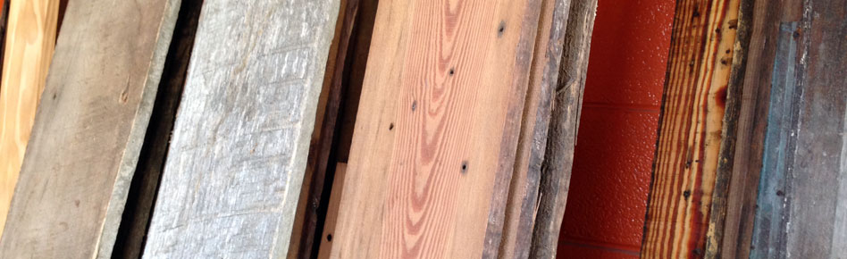

Add a distinctive touch to any room with handcrafted furniture from Salt Wood Company in Charleston, South Carolina. Our team has many years of experience in the woodworking and wood finishing business and it is that expertise that translates into some amazing products.
We combine your ideas with our woodworking skills to create a one of a kind, special piece. We also offer many finishes from an artistic milk paint wash to oxidized mineral finishes. We take as much pride in our product as we do in our customer service. Customer Service to us means you getting your piece on time, the quality you deserve and the addition to your home that will endure through generations.
OFFERINGS
Handcrafted pieces made with reclaimed wood and natural finishes
Boxes

You'll love our handcrafted items made with reclaimed wood from a variety of sources, such as old Hotels, barns, and other structures. Recently, we harvested floor beams from the site of The Vendue Inn in downtown Charleston. The beams were part of a structure built in 1780 from old growth pine. Now it can become a part of your home.
We also picked up some heart pine barnwood from an old manufacturing plant in the South Carolina Upstate. The structure was destined for destruction, but locals found the resources to offer it for repurposing.
Have an idea for a project? Give us a call!
(843) 513-2829
RECLAIMED WOOD
We build unique furniture using beautiful, old-growth wood

Reclaimed wood is popular for many reasons including its unique appearance, the contribution to green building, the history of the wood's origins, and the wood's physical appearance such as strength, durability, and stability. Reclaimed wood has become so popular that it is becoming rare. An abundance descends from old wooden structures built throughout the Southeast. In the early 1900s, a majority of our building were made from wood. As those structures are replaced by steel, we repurpose the wood into homes in a variety of ways.
Not all reclaimed wood is from a 19th century structure as we build many of our smaller pieces from pallet wood. Most pallets are made from oak, pine, and poplar. Typically, the wood is of a lesser grade than that used for flooring while the furniture translates into wood showing more character with saw marks, knots, and other interesting flaws. Considering there are around 9 million pallets in circulation in the U.S. today, the supply is virtually unlimited.
FINISHES
Our finishes are what separate us from the others as we have spent many hours researching, testing and applying a variety of finishes. Nothing is more beautiful that of a hand wax finish on an old piece of heart pine but design requirements also call for alternatives. There is a rising popularity in organic finishes. They are friendlier to our environment and our bodies. Many stain colors are available in a soy base.
We also use an oxidation process that works well with white and red oak. Perhaps your piece needs some color. We have had a good deal of experience with distressed painted surfaces, washed schemes, milk paint, and chalk paint. All of which can be combined in a variety of ways to give you the look you want.
Our proprietary black oak finish is the result of an oxidation process that turns blonde oak into a unique and distinctive black toned finish. Once our natural waxes are applied it has the feel of fine old leather. The reverse is our white oak finish that offers the black with soft white undertones. Either the black or white oak can be tinted to meet the needs of your color scheme.
Heart Pine typically offers the blonde to honey color that makes it so distinctive. We smooth the surface to give it a nice hand but stop there in order not to remove the character that makes it so desirable. The possibilities are endless.
-
One of a kind, unique works of art.
-
The construction was solid and the finish of the wood was really cool and rustic.
-
All first class - all the time.